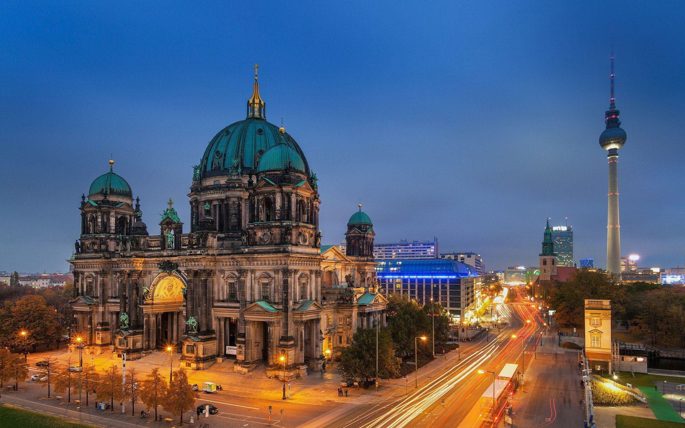
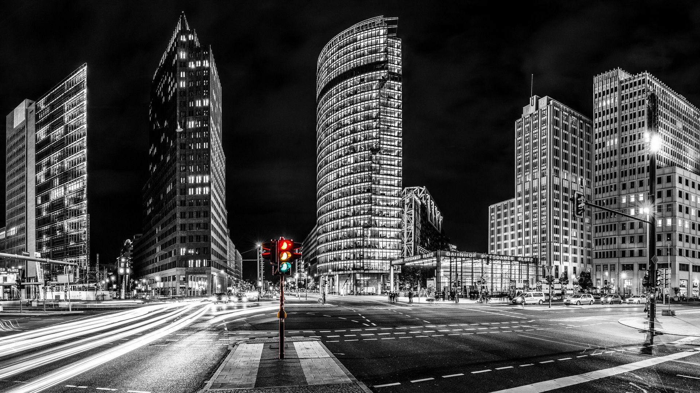
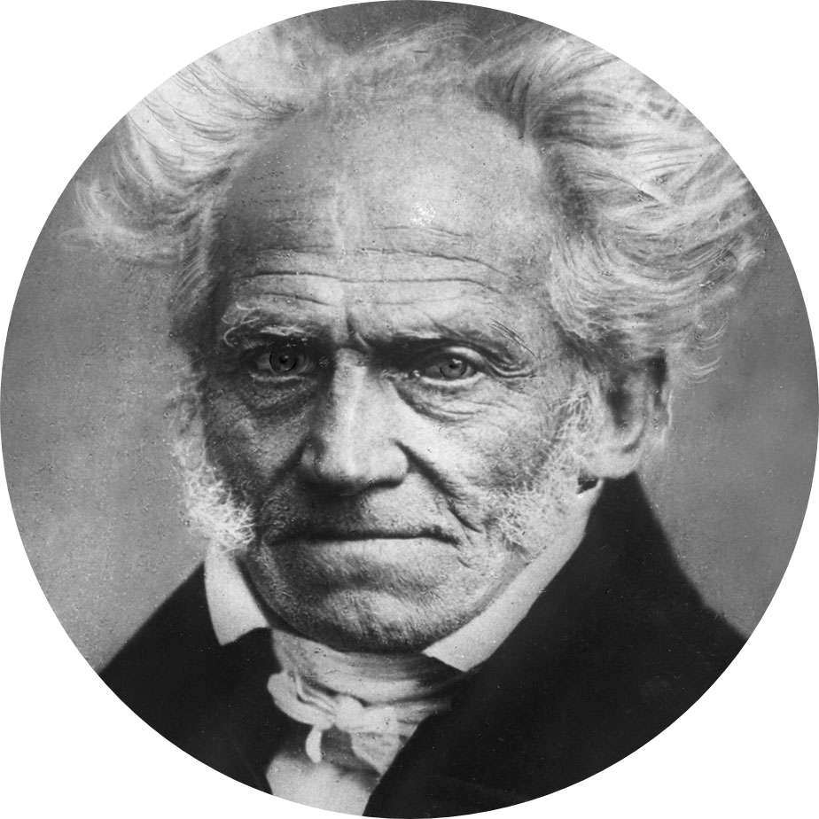
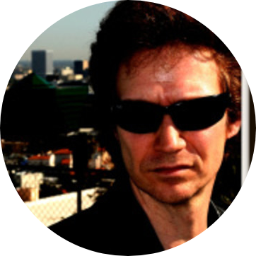

Menschen auf der Straße am diskutieren. Hupende Autos an
der großen Kreuzung. Das Bohren der neuen Baustelle von nebenan.
All das sind Geräusche, die das urbane Leben stark prägen. Lärmbelästigung
entwickelt sich daher zur einer großen Herausforderung für das Leben in der Stadt.

Das Projekt “Die gehörte Stadt” von Lab:Prepare ist dabei dieser
Problematik auf den Grund gegangen. Anhand einer interaktiven Soundkarte
hat die interdisziplinäre Gruppe aus sieben Studierenden, die Lärmbelästigung in Berlin veranschaulicht.

Dabei haben sie Geräusche aus dem Alltag Berliner Studierender in kurze
Snippets auf einer Website gebracht, um zu zeigen mit wie viel Lärm Studierende in der Stadt zu kämpfen haben.

“I have long held the opinion that the amount of noise that anyone
can bear undisturbed stands in inverse proportion to his mental capacity
and therefore be regarded as a pretty fair measure of it.”
― Arthur Schopenhauer

“There's nothing quite like the sound of chainsaws over morning coffee.”